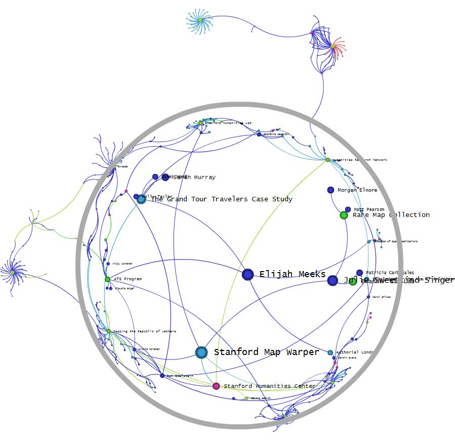
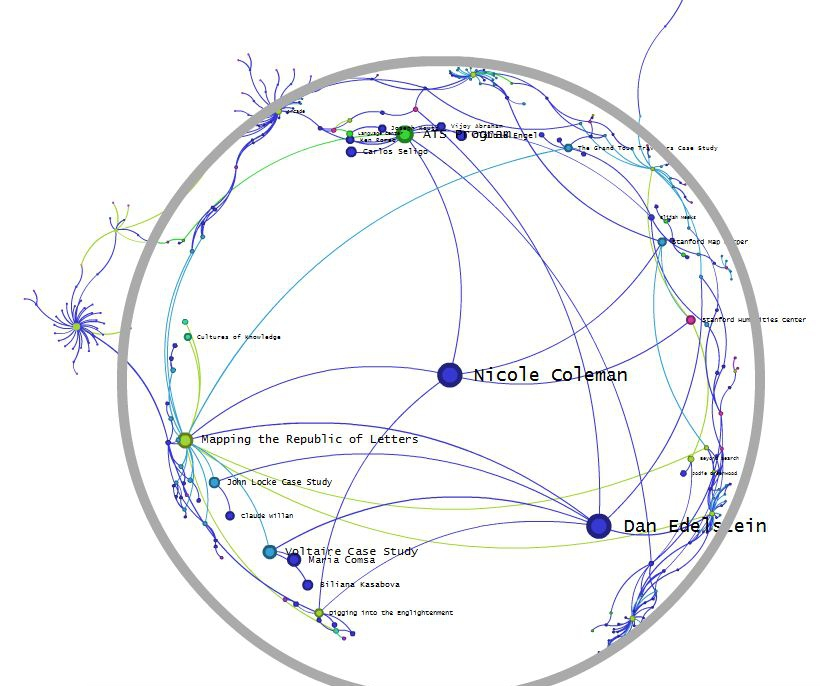

I’ve been digging into Alexis Jacomyal’s new network graph viewer SiGMa, which is still in development but the source is available at github. One of the features he’s developing is a fisheye viewer, which is fun and frustrating and affords a taste of ego networks and how a graph may appear drastically different from one perspective compared to another. This is particularly interesting in the studying the structure of and participation in digital humanities projects, such as those here at Stanford. Running the DH@Stanford graph in SiGMa allows for a pair of different perspectives, my own and that of a Nicole Coleman, co-investigator of the Mapping the Republic of Letters project:


There are a number of interesting artifacts in both these views. For one thing, Nicole is officially linked to the Stanford Map Warper, but her other links have drawn her far enough away from its orbit that it’s barely visible. Another is Dan Edelstein, whose node symbol is larger due to his number of connections, actually appears at the same size as Nicole’s. Dan also happens to be a PI on Mapping the Republic of Letters and I also happen to have done some work with the Stanford Map Warper and so it’s interesting to see these implicit relationships reflected in neighborhood locality–but this may only reflect the type of algorithm used to sort the graph and not an underlying spatial fact.As usual, I find it necessary to point out that this network is roughly defined and incomplete and that these are only presented for the purpose of spurring exploration of the concept of perspective on the analysis and representation of networks.